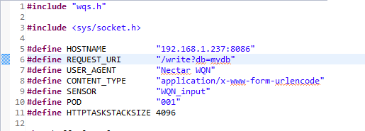

Building your project¶
Once all of the hardware is set up and the software is configured it is time to make a couple of changes before we build and run your project. Clone the project from github into the workspace chosen during CCS setup and import the project. In the file named http.c, edit the HOSTNAME field to your LAN IP address followed by :8086. To discover your LAN IP, enter ipconfig into the cmd prompt if using windows, and ifconfig for linux.
build and debug the project. Connect your MCU directly to your router via the included ethernet cable